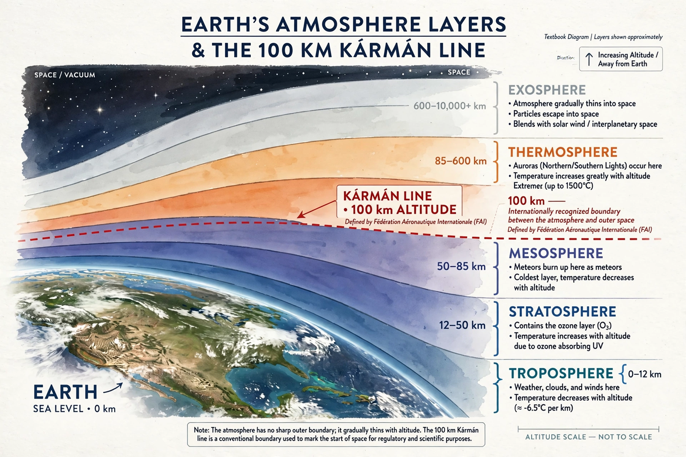

Kármán line
From Wikipedia, the free encyclopedia
| Kármán line | |
|---|---|
| Altitude | 100 km (FAI definition) |
| Named for | Theodore von Kármán |
| US usage | 50 miles (80 km) for astronaut wings (historically) |

The edge of space, by convention.The Kármán line is a boundary commonly taken to mark the edge of space, set by the Fédération Aéronautique Internationale at 100 kilometres above Earth's sea level. It is named for Theodore von Kármán, the Hungarian-American aerodynamicist (and co-founder of the Jet Propulsion Laboratory) who calculated that at roughly this altitude the atmosphere is so thin that a vehicle would need orbital velocity to generate enough lift to fly — aeronautics gives way to astronautics.
The line is a convention, not a physical edge: the atmosphere fades gradually, and the United States long awarded astronaut wings at 50 miles (80 km) — the altitude of the X-15 flights and the suborbital hops of Blue Origin and Virgin Galactic passengers, whose 'astronaut' status under the 100 km definition is politely disputed. Astrophysicist Jonathan McDowell's analysis of satellite decay argues for 80 km as the physically truer boundary, a debate the FAI has acknowledged without yet moving.
In practice
Crossing the line remains the cleanest definition of 'having been to space': by the 100 km standard, the count of spacefarers passed 600 in the 2020s; by 80 km it is somewhat higher. V-2 rocket MW 18014 crossed it in June 1944, the first human-made object to do so.
See also
Spaceflight · Jet Propulsion Laboratory · V-2 rocket · Blue Origin